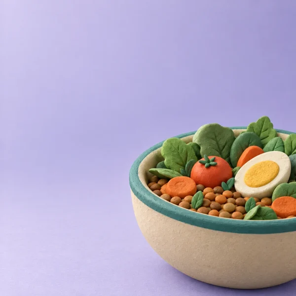

Scanne
Le code-barres suffit : Pépin retrouve le produit et sa composition. Produit introuvable ? Recopie l'étiquette, il est calculé quand même.
Scanne tes produits, je te dis leur index glycémique estimé et la charge pour ta portion. Sans jugement, avec des idées pour mieux savourer.

Scanne un produit, relis sa recette, compose ton assiette, fais tes courses : Glyami t'accompagne du rayon à l'assiette.
Le code-barres suffit : Pépin retrouve le produit et sa composition. Produit introuvable ? Recopie l'étiquette, il est calculé quand même.

Index glycémique estimé et charge glycémique pour la portion que tu manges vraiment, avec une couleur simple : bas, moyen ou élevé.

Pépin relit l'étiquette pour toi : Nutri-Score, Nova, additifs, puis sucres ou fibres selon le produit, en quatre tuiles faciles à lire.

Celui-ci ou celui-là ? Compare deux produits, et laisse la boussole de Pépin te montrer des échanges plus doux du même rayon.

Tes repas s'additionnent dans une jauge avec un repère de 80, que tu peux régler. Tu vois d'un coup d'œil où tu en es, sans rien calculer.

Compose ton repas, pâtes, légumes et poulet par exemple : Glyami estime la charge du repas entier, pas seulement celle d'un produit.

Plusieurs listes en tuiles dessinées, rangées par rayon : plus de 500 articles, avec l'IG estimé des aliments, des listes toutes prêtes, et l'envoi à un proche par message ou par code à scanner.

Des plats simples avec leur charge estimée par part. Choisis le nombre de personnes : les quantités suivent, et les ingrédients partent dans ta liste.
Scanne une fois le code de ta carte de fidélité : Pépin te la ressort à la caisse. Tes cartes restent sur ton téléphone.

Sucres cachés, allergies, sans porc, sans alcool : Pépin inspecte les ingrédients à chaque scan et te prévient.

Une carte vrai ou faux par jour pour comprendre, en une minute, ce qui fait monter la glycémie.

Historique des scans et des repas, poids et IMC sur une jauge claire, et ta marche après le repas, cochée jour après jour.

Pas de compte, pas de serveur Glyami, pas de pub, pas de traceur dans l'app. Tout se calcule sur ton téléphone. Les seules connexions servent à retrouver un produit dans une base alimentaire ouverte.
Lire la politique de confidentialité →L'index glycémique (IG) indique à quelle vitesse un aliment contenant des glucides fait monter la glycémie, comparé au glucose pur (100). On parle d'IG bas jusqu'à 55, modéré de 56 à 69 et élevé à partir de 70. Glyami affiche un IG estimé à partir de tables scientifiques publiées.
La charge glycémique (CG) tient compte de la quantité que tu manges vraiment : CG = IG × glucides de la portion (en grammes) ÷ 100. Un aliment à IG élevé peut avoir une petite charge si la portion est modeste. Glyami la calcule pour ta portion et additionne tes repas dans ta charge du jour.
Oui. Pas d'abonnement, pas de publicité, pas d'achat intégré et pas de compte à créer.
Nulle part : tout ce que tu saisis reste sur ton téléphone. Il n'y a pas de serveur Glyami. Les seules connexions servent à retrouver un produit dans une base alimentaire ouverte, sans aucune donnée personnelle.
Non. Glyami donne des informations nutritionnelles et des estimations. Ce n'est pas un dispositif médical : l'app ne pose pas de diagnostic, ne calcule pas de dose et ne remplace pas l'avis de ton médecin ou de ton diététicien.
Pour tout adulte qui veut comprendre l'effet de ses repas sur la glycémie et mieux choisir ses produits, au quotidien. Glyami informe ; il ne suit pas une maladie et ne remplace pas un suivi médical.
Les index glycémiques sont estimés à partir de tables publiées (Atkinson et al., 2008 et 2021 ; base de l'université de Sydney) et de la composition du produit. Les informations des produits viennent d'Open Food Facts, et les glucides des idées repas de la table Ciqual 2025 de l'Anses. Tout est détaillé dans l'app : Réglages → Sources des données.
Elles restent sur ton téléphone : le code, le nom et la photo éventuelle ne sont envoyés nulle part. Glyami n'est fait que pour les cartes de fidélité : n'y mets pas ta carte bancaire. Si tu saisis un numéro qui ressemble à celui d'une carte bancaire, Pépin ne le garde pas.
Glyami arrive bientôt sur Android, via Google Play. L'app est disponible en français, en arabe, en anglais et en espagnol.
Oui. Glyami s'appelait Glycéo jusqu'en octobre 2026. C'est la même app, avec le même Pépin ; seul le nom change.
 Glyami est un outil d'information nutritionnelle. Ce n'est pas un dispositif médical : l'app ne pose pas de diagnostic et ne remplace pas l'avis d'un professionnel de santé.
Glyami est un outil d'information nutritionnelle. Ce n'est pas un dispositif médical : l'app ne pose pas de diagnostic et ne remplace pas l'avis d'un professionnel de santé.